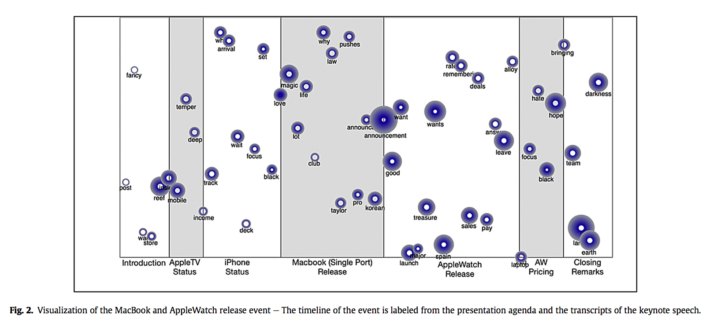

Optimal placement of public-access AEDs in urban environments.
Bonnet, B., Gama Dessavre, D., Kraus, K., & Ramirez-Marquez, J. E.. Computers & Industrial Engineering, 90, 269-280.
Multidimensional Approach to Complex System Resilience Analysis
Gama Dessavre D., Ramirez-Marquez J.E., Barker K. Reliability Engineering and System Reliability Engineering & System Safety 149 (2016): 34-43.
Towards Computational Discourse Analysis: A Methodology for Mining Twitter Backchanneling Conversations
Lipizzi C., Gama Dessavre D., Iandoli L., Ramirez-Marquez J.E. Computers in Human Behavior, 64, 782-792

Social Media Conversation Monitoring: Visualize Information Contents of Twitter Messages Using Conversational Metrics.
Lipizzi C., Gama Dessavre D., Iandoli L., Ramirez-Marquez J.E. Procedia Computer Science, 80, 2216-2220
Video Demos
Augmented Reality Data Visualization Toolkit (In process)
Narrative and Topic Visualization (Paper in revission process)
Pulaski Skyway Closure Traffic Simulation
Other Demos
Home Patient Visits Time Distribution Dashboard
Comet Plot d3.js tool
Document Topic Content Heatmap
Lectures and Workshops
Lectures
Stevens EM 622 Data Analysis & Visualization Technology for Decision Making
Instructor: Fall 2015 to Spring 2017
Stevens EM 622 Online Data Analysis & Visualization Technology for Decision Making
Instructor: Spring 2015
Computer Architecture Practical Lab
Instructor: Fall 2012
Workshops
Data Visualization Design Workshop
Workshop for the INCOSE Student Division at Stevens.
Visual Perception Workshop
Workshop for the Masters in Data Science at ITAM.
Interactive Visualization Workshop
Workshop for the Masters in Data Science at ITAM.
Network Visualization Workshop
Workshop for the Masters in Data Science at ITAM.